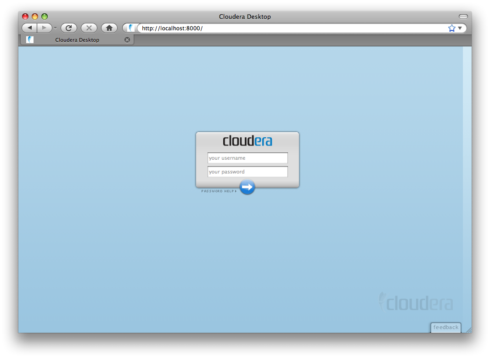
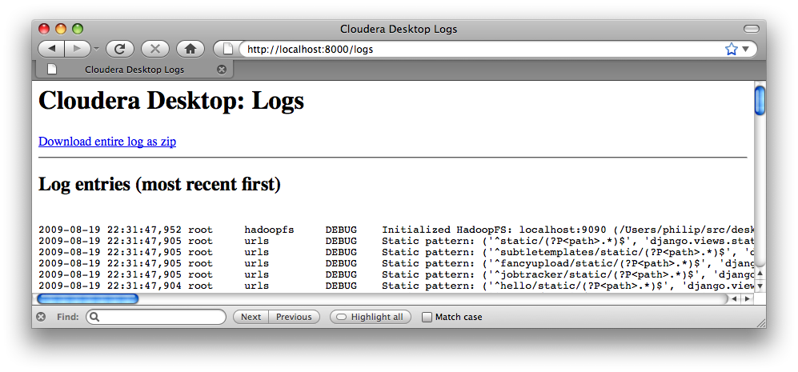

Table of Contents
Hue is a graphical user interface to operate and develop applications for Hadoop. Hue applications are collected into a desktop-style environment and delivered as a Web application, requiring no additional installation for individual users.
This guide describes how to install and configure a Hue tarball. For information about installing Hue packages, see Installing Hue.
There is also a companion SDK guide that describes how to develop new Hue applications: Hue SDK Documentation
![[Important]](images/important.png) | |
Hue requires the Cloudera Distribution for Hadoop (CDH), version 2 or 3. |
Conventions Used in this Guide:
-
Commands that must be run with
rootpermission have a#command prompt. -
Commands that do not require
rootpermission have a$command prompt.
The following instructions describe how to install the Hue tarball on a multi-node cluster. You must install CDH2 or CDH3 first and update some Hadoop configuration files before installing Hue.
| |
You’ll need to install the Hue Plug-ins on every machine that’s running Hadoop daemons. |
To use Hue, you must be running the Cloudera Distribution for Hadoop
with a version number of at least 0.20.1+133. If you are not running this
version of CDH or later, upgrade your cluster before proceeding.
Hue consists of a web service that runs on a special node in your cluster. Choose one node where you want to run Hue. This guide refers to that node as the Hue Server. For optimal performance, this should be one of the nodes within your cluster, though it can be a remote node as long as there are no overly restrictive firewalls. For small clusters of less than 10 nodes, you can use your existing master node as the Hue Server.
You can download the Hue tarball here: tarball.
Hue employs some Python modules which use native code and requires certain development libraries be installed on your system. To install from the tarball, you must have the following installed:
Table 1. Required Dependencies
| Redhat | Debian |
|---|---|
| gcc | gcc |
| libxml2-devel | libxml2-dev |
| libxslt-devel | libxslt-dev |
| mysql-devel | librarysqlclient-dev |
| python-devel | python-dev |
| python-setuptools | python-setuptools |
| sqlite-devel | libsqlite3-dev |
Configure $HADOOP_HOME and $PREFIX with the path of your Hadoop
installation and the path where you want to install Hue by running:
$ HADOOP_HOME=/path/to/hadoop-0.20 PREFIX=/path/to/install/into make install
You can install Hue anywhere on your system - it does not need root permission
although additional thirdparty SDK applications may.
It is a good practice to create a new user for Hue and either install Hue in
that user’s home directory, or in a directory within /usr/local.
In order to communicate with Hadoop, Hue requires a plug-in jar that you must
install and configure. This jar is: desktop/libs/hadoop/java-lib/hue-plugins-0.9.jar,
relative to the Hue installation directory.
Run these commands to create a symlink your Hadoop lib directory
(/usr/lib/hadoop-0.20/lib if you installed CDH via a Debian or RPM package)
to this jar:
$ cd /usr/lib/hadoop/lib $ ln -s /usr/share/hue/desktop/libs/hadoop/java-lib/hue*jar . # Restart Hadoop
![[Note]](images/note.png) | |
On a multi-node cluster, you must install the plug-in jar on every node. You do not need to install all of the Hue components on every node. |
After making the changes in your Hadoop configuration, restart the Hadoop daemons:
# /etc/init.d/hadoop-0.20-datanode restart # /etc/init.d/hadoop-0.20-namenode restart # /etc/init.d/hadoop-0.20-jobtracker restart # /etc/init.d/hadoop-0.20-secondarynamenode restart # /etc/init.d/hadoop-0.20-tasktracker restart
To start Hue, use build/env/bin/supervisor. This will start
several subprocesses, corresponding to the different Hue components.
Q: I moved my Hue installation from one directory to another and now Hue no longer functions correctly. A: Due to the use of absolute paths by some Python packages, you must run a series of commands if you move your Hue installation. In the new location, run:
$ rm app.reg $ rm -r build $ make apps
Q: Why does "make install" compile other pieces of software? A: In order to ensure that Hue is stable on a variety of distributions and architectures, it installs a Python virtual environment which includes its dependencies. This ensures that the software can depend on specific versions of various Python libraries and you don’t have to be concerned about missing software components.
Hue requires that you install and configure some plugins in your
Hadoop installation. In order to enable the plugins, you must make some
small additions to your configuration files. Make these configuration changes
on each node in your cluster by editing the following files
in: /etc/hadoop-0.20/conf/
Add the following configuration properties to hdfs-site.xml:
<property> <name>dfs.namenode.plugins</name> <value>org.apache.hadoop.thriftfs.NamenodePlugin</value> <description>Comma-separated list of namenode plug-ins to be activated. </description> </property> <property> <name>dfs.datanode.plugins</name> <value>org.apache.hadoop.thriftfs.DatanodePlugin</value> <description>Comma-separated list of datanode plug-ins to be activated. </description> </property> <property> <name>dfs.thrift.address</name> <value>0.0.0.0:9090</value> </property>
Add the following configuration properties to mapred-site.xml:
<property> <name>jobtracker.thrift.address</name> <value>0.0.0.0:9290</value> </property> <property> <name>mapred.jobtracker.plugins</name> <value>org.apache.hadoop.thriftfs.ThriftJobTrackerPlugin</value> <description>Comma-separated list of jobtracker plug-ins to be activated. </description> </property>
To enable full monitoring in the Health application, the metrics
contexts must not be NullContext. You can configure hadoop-metrics.properties as shown below:
# Exposes /metrics URL endpoint for metrics information. dfs.class=org.apache.hadoop.metrics.spi.NoEmitMetricsContext mapred.class=org.apache.hadoop.metrics.spi.NoEmitMetricsContext jvm.class=org.apache.hadoop.metrics.spi.NoEmitMetricsContext rpc.class=org.apache.hadoop.metrics.spi.NoEmitMetricsContext
If you are setting $HADOOP_CLASSPATH in your hadoop-env.sh, be sure
to set it in such a way that user-specified options are preserved. For example,
Correct:
# HADOOP_CLASSPATH=<your_additions>:$HADOOP_CLASSPATH
Incorrect:
# HADOOP_CLASSPATH=<your_additions>
This enables certain components of Hue to add to Hadoop’s classpath using the environment variable.
If your users are likely to be submitting jobs both using Hue
and from the same machine via the command line interface, they will be doing so as the hue
user if they’re using Hue and via their own user account
on the command line. This leads to some contention
on the directory specified by hadoop.tmp.dir, which defaults
to /tmp/hadoop-${user.name}.
Specifically, hadoop.tmp.dir is used to unpack jars in bin/hadoop jar.
One work around to this is
to set hadoop.tmp.dir to /tmp/hadoop-${user.name}-${hue.suffix} in the core-site.xml file:
<property>
<name>hadoop.tmp.dir</name>
<value>/tmp/hadoop-${user.name}${hue.suffix}</value>
</property>Unfortunately, when the variable is unset, you’ll end up
with directories named /tmp/hadoop-user_name-${hue.suffix} in
/tmp. The job submission daemon, however, will still work.
Restart all of the daemons in your cluster so that the plugins can be loaded.
You can confirm that the plugins are running correctly by tailing the daemon logs:
$ tail --lines=500 /var/log/hadoop-0.20/hadoop*namenode*.log | grep ThriftPlugin 2009-09-28 16:30:44,337 INFO org.apache.hadoop.thriftfs.ThriftPluginServer: Starting Thrift server 2009-09-28 16:30:44,419 INFO org.apache.hadoop.thriftfs.ThriftPluginServer: Thrift server listening on 0.0.0.0:9090
![[Tip]](images/tip.png) | Configuring Your Firewall for Hue |
|---|---|
Hue currently requires that the machines within your cluster can connect to each other freely over TCP. The machines outside your cluster must be able to open TCP port 8088 on the Hue Server to interact with the system. |
Hue ships with a default configuration that will work for
pseudo-distributed clusters. If you are running on a real cluster, you must make a few changes to the /etc/hue/hue.ini configuration file. The
following sections describe the key configuration options you must make to configure Hue.
| Listing all Configuration Options |
|---|---|
To list all available configuration options, run: /usr/share/hue/build/env/bin/hue config_help | less This commands outlines the various sections and options in the configuration, and provides help and information on the default values. |
| Viewing Current Configuration Options |
|---|---|
To view the current configuration from within Hue, open: http://<hue>/dump_config |
| Using Multiple Files to Store Your Configuration |
|---|---|
Hue loads and merges all of the files with extension |
Hue uses the CherryPy web server. You can use the following options to change the IP address and port that the web server listens on. The default setting is port 8088 on all configured IP addresses.
# Webserver listens on this address and port http_host=0.0.0.0 http_port=8088
By default, the first user who logs in to Hue can choose any username and password and becomes an administrator automatically. This user can create other user and administrator accounts. User information is stored in the Django database in the Django backend.
The authentication system is pluggable. For more information, see the Hue SDK Documentation.
You can configure Hue to serve over HTTPS. To do so, you must install "pyOpenSSL" within Hue’s context and configure your keys.
To install pyOpenSSL, from the root of your Hue installation path,
do the following steps:
- Run this command:
$ ./build/env/bin/easy_install pyOpenSSL
-
Configure Hue to use your private key by adding the following
options to the
/etc/hue/hue.iniconfiguration file:
ssl_certificate=/path/to/certificate ssl_private_key=/path/to/key
-
Ideally, you would have an appropriate key signed by a Certificate Authority.
If you’re just testing, you can create a self-signed key using the
opensslcommand that may be installed on your system:
# Create a key $ openssl genrsa 1024 > host.key # Create a self-signed certificate $ openssl req -new -x509 -nodes -sha1 -key host.key > host.cert
| Self-signed Certificates and File Uploads |
|---|---|
To upload files using the Hue File Browser over HTTPS requires using a proper SSL Certificate. Self-signed certificates don’t work. |
If your Hadoop cluster contains multiple nodes, you should configure
Hue to point to the external hostnames of your NameNode and
JobTracker. To do so, change the namenode_host and jobtracker_host
lines in the /etc/hue/hue.ini configuration file. Refer to the inline comments in the configuration file for more information.
After your cluster is running with the plugins enabled, you can start Hue on your Hue Server by running:
# build/env/bin/supervisor
Your Hue installation is now running.
Now that you’ve installed and started Hue, you can feel free to skip ahead to the Using Hue section. Administrators may want to refer to this section for more details about managing and operating a Hue installation.
A script called supervisor manages all Hue processes. The supervisor is a watchdog process — its only purpose is to spawn and monitor other processes.
A standard Hue installation starts and monitors the following processes:
-
runcpserver- a web server based on CherryPy that provides the core web functionality of Hue -
jobsubd- a daemon which handles submission of jobs to Hadoop -
beeswax server- a daemon that manages concurrent Hive queries
If you have installed other applications into your Hue instance, you may see other daemons running under the supervisor as well.
You can see the supervised processes running in the output of ps -f -u hue:
UID PID PPID C STIME TTY TIME CMD hue 8685 8679 0 Aug05 ? 00:01:39 /usr/share/hue/build/env/bin/python /usr/share/hue/build/env/bin/desktop runcpserver hue 8693 8679 0 Aug05 ? 00:00:01 /usr/share/hue/build/env/bin/python /usr/share/hue/build/env/bin/desktop jobsubd hue 8695 8679 0 Aug05 ? 00:00:06 /usr/java/jdk1.6.0_14/bin/java -Xmx1000m -Dhadoop.log.dir=/usr/lib/hadoop-0.20/logs -Dhadoop.log.file=hadoop.log ...
Note that the supervisor automatically restarts these processes if they fail for any reason. If the processes fail repeatedly within a short time, the supervisor itself shuts down.
The Hue logs are found in /var/log/hue. Inside the log directory you can find:
-
An
access.logfile, which contains a log for all requests against the Hue web server. -
A
supervisor.logfile, which contains log information for the supervisor process. -
A
supervisor.outfile, which contains the stdout and stderr for the supervisor process. -
A
.logfile for each supervised process described above, which contains the logs for that process. -
A
.outfile for each supervised process described above, which contains the stdout and stderr for that process.
If users on your cluster have problems running Hue, you can often find error messages in these log files. If you are unable to start Hue from the init script, the
supervisor.log log file can often contain clues.
In addition to logging INFO level messages to the logs directory, the Hue web server keeps a small buffer
of log messages at all levels in memory. You can view these logs by visiting http://myserver:8088/logs.
The DEBUG level messages shown can sometimes be helpful in troubleshooting issues.
Hue requires a SQL database to store small amounts of data, including user account information as well as history of job submissions and Hive queries. By default, Hue is configured to use the embedded database SQLite for this purpose, and should require no configuration or management by the administrator. However, MySQL is the recommended database to use; this section contains instructions for configuring Hue to access MySQL and other databases.
The default SQLite database used by Hue is located in /usr/share/hue/desktop/desktop.db.
You can inspect this database from the command line using the sqlite3 program. For example:
# sqlite3 /usr/share/hue/desktop/desktop.db SQLite version 3.6.22 Enter ".help" for instructions Enter SQL statements terminated with a ";" sqlite> select username from auth_user; admin test sample sqlite>
It is strongly recommended that you avoid making any modifications to the database directly using SQLite, though this trick can be useful for management or troubleshooting.
If you use the default SQLite database, then copy the desktop.db file to another node
for backup. It is recommended that you back it up on a regular schedule,
and also that you back it up before any upgrade to a new version of Hue.
Although SQLite is the default database type, some advanced users may prefer to have Hue access an alternate database type. Note that if you elect to configure Hue to use an external database, upgrades may require more manual steps in the future.
The following instructions are for MySQL, though you can also configure Hue to work with other common databases such as PostgreSQL and Oracle.
| Tested Database Backends |
|---|---|
Note that Hue has only been tested with SQLite and MySQL database backends. |
To configure Hue to store data in MySQL:
- Create a new database in MySQL and grant privileges to a Hue user to manage this database.
mysql> create database hue; Query OK, 1 row affected (0.01 sec) mysql> grant all on hue.* to 'hue'@'localhost' identified by 'secretpassword'; Query OK, 0 rows affected (0.00 sec)
- Shut down Hue if it is running.
- To migrate your existing data to MySQL, use the following command to dump the existing database data to a text file. Note that using the ".json" extension is required.
$ /usr/share/hue/build/env/bin/hue dumpdata > <some-temporary-file>.json
-
Open the
/etc/hue/hue.inifile in a text editor. Directly below the[[database]]line, add the following options (and modify accordingly for your MySQL setup):
host=localhost port=3306 engine=mysql user=hue password=secretpassword name=hue
- Install the Python drivers for MySQL into Hue’s environment:
# su - hue -s /bin/bash $ /usr/share/hue/build/env/bin/easy_install MySQL-python
easy_install will access the Internet to find MySQL-python.
If you don’t have network access, you may specify a path
to a tarball (such as /tmp/MySQL-python-1.2.2.tar.gz) instead.
6. As the Hue user, configure Hue to load the existing data and create the
necessary database tables:
$ /usr/share/hue/build/env/bin/hue syncdb --noinput $ mysql -uhue -psecretpassword -e "DELETE FROM hue.django_content_type;" $ /usr/share/hue/build/env/bin/hue loaddata <temporary-file-containing-dumped-data>.json
Your system is now configured and you can start the Hue server as normal.
This section includes documentation specific to built-in Hue applications.
Beeswax is an application that is a component within Hue and helps you use Hive to query your data.
Beeswax, the Hive interface in Hue, includes Hive 0.5. You do not need an existing Hive installation.
Your Hive data is stored in HDFS, normally under /user/hive/warehouse
(or any path you specify as hive.metastore.warehouse.dir in your
hive-site.xml). Make sure this location exists and is writable by
the users whom you expect to be creating tables. /tmp (on the local file
system) must be world-writable, as Hive makes extensive use of it.
Familiarize yourself with the configuration options in
hive-site.xml (see
http://wiki.apache.org/hadoop/Hive/AdminManual/Configuration).
Having a hive-site.xml is optional but often useful, particularly on setting
up a metastore.
You may store the hive-site.xml in /etc/hue/conf, or instruct
Beeswax to locate it using the hive_conf_dir configuration variable. See
/etc/hue/conf/hue-beeswax.ini.
After installation, you can use Hue by navigating to http://myserver:8088/.
The following login screen appears:

Launch applications on the bottom-right.

The Help application guides users through the various installed applications.
Hue is primarily tested on Firefox 3.5 and Firefox 3.6, on Windows, Mac, and Linux. Google Chrome and Safari work as well.
Hue is currently at version 0.9. Your feedback is welcome. The best way to send feedback is to join the mailing list, and send e-mail, to hue-user@cloudera.org.
If you find that something doesn’t work, it’ll often be helpful to include logs
from your server. These are available at the /logs URL on Hue’s web server
(not part of the graphical Hue UI). Please download the logs as a zip (or cut
and paste the ones that look relevant) and send those with your bug reports.
